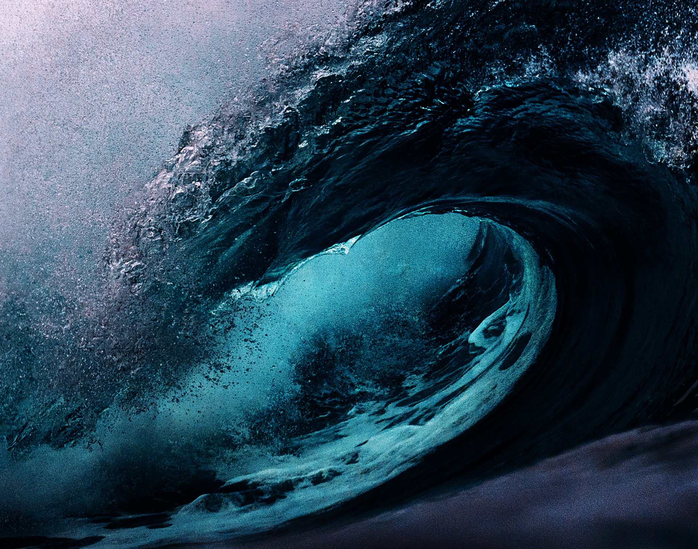

Мо́ре — это часть Мирового океана, обособленная сушей или возвышениями подводного рельефа. Отличается от Мирового океана также гидрологическим, метеорологическим и климатическим режимами, что связано с их окраинным положением относительно океанов и замедлением водообмена из-за ограниченности связи с открытой частью. Моря также отделяют друг от друга в соответствии с их флорой и фауной (например, Эгейское море находится в Средиземном море). Для фауны морей характерно наличие эндемиков.
